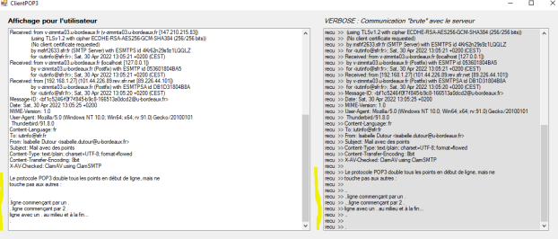
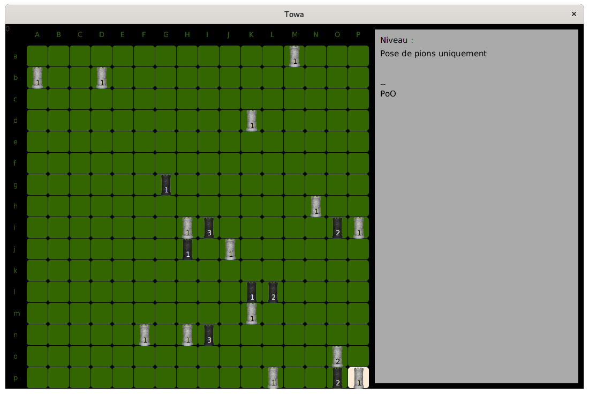
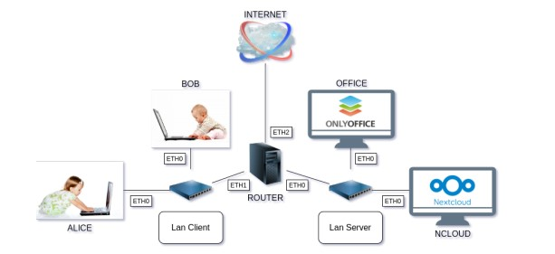
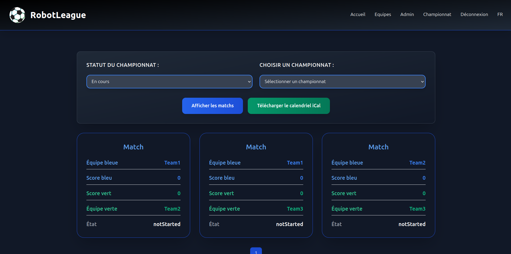

Mes Projets

Station météorologique personnelle
Création d'une station météorologique personnelle en Java. Le projet comprend le stockage et l'affichage de données météorologiques.
En savoir plus

Client Mail
Création d'une interface permettant de se connecter à une boîte mail avec le protocole POP3.
En savoir plus

Jeu de tour
Création d'un jeu de plateau 16x16 cases, un jeu 1 contre 1 où chacun pose 1 tour chacun leur tour avec des règles spécifiques.
En savoir plus

NEmu
Installation et configuration d'un serveur Nextcloud et Onlyoffice sur un réseau virtuel Debian, avec configuration de clients lourds et rédaction d'un tutoriel en Markdown.
En savoir plus

Application web compétition de Football de Robots
Développement d'une application full-stack avec symfony. Savoir gérer un projet en s’appuyant sur la méthodologie Scrum
En savoir plus